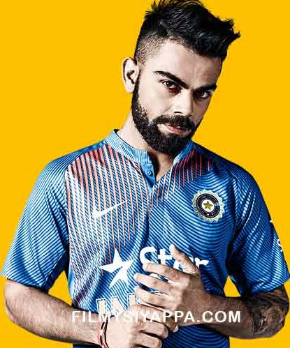

Virat Kohli
5 November 1988 - Present

Present Captain of Indian Cricket Team
and
Cricketer, Right hand Batsman
Virat Kohli is an Indian cricketer and the current captain of the India national team.
A right-handed top-order batsman, Kohli is regarded as one of the best contemporary batsmen in the world.
He plays for Royal Challengers Bangalore in the Indian Premier League, and has been the team's captain since 2013.
Kohli first played for Delhi Under-15 team in October 2002 in the 2002–03 Polly Umrigar Trophy.
He was the leading run-scorer for his team in that tournament with 172 runs at an average of 34.40.
He became the captain of the team for the 2003–04 Polly Umrigar Trophy and scored 390 runs in 5 innings at an average of 78 including two centuries and two fifties.
In late 2004, he was selected in the Delhi Under-17 team for the 2003–04 Vijay Merchant Trophy.
He scored 470 runs in four matches at an average of 117.50 with two hundreds and top-score of 251*.
Delhi Under-17s won the 2004–05 Vijay Merchant Trophy in which Kohli finished as the highest run-scorer with 757 runs from 7 matches at an average of 84.11 with two centuries.
In February 2006, he made his List A debut for Delhi against Services but did not get to bat.
- Wife:Anushka Sharma
- For the first Test of the Australian tour in December 2014, Dhoni was not part of the Indian team at Adelaide
due to an injury, and Kohli took the reins as Test captain for the first time.[199] Kohli scored 115 in
India's first innings, becoming the fourth Indian to score a hundred on Test captaincy debut.[200]
In their second innings, India were set a target of 364 to be scored on the fifth day.
Kohli came in to bat when the Indian innings was reduced to 57/2 and started batting aggressively.
He put on 185 runs for the third wicket with Murali Vijay before Vijay's dismissal,
which triggered a batting collapse. From 242/2, India was bowled out for 315 with Kohli's 141 off
175 balls being the top score.[201] Kohli noted that his team was looking for a win and not a draw,
while also saying that it was "the best Test I have been part of".[202] Kohli's second innings ton was
hailed by several Australian commentators as the finest fourth-innings performance they had ever seen in
Australia.[203]
- Dhoni returned to the team as captain for the second match at Brisbane where Kohli scored 19 and 1 in a f
our-wicket defeat for India. In the Melbourne Boxing Day Test, Kohli was India's top-scorer in both
innings. He made his personal best Test score of 169 in the first innings while sharing a 262-run
partnership with Rahane, India's biggest partnership outside Asia in ten years.
Kohli followed
it with a score of 54 in India's second innings on the fifth day, helping his team draw the Test match.
[96] Dhoni announced his retirement from Test cricket at the conclusion of this match.
- Kohli was
appointed as the full-time Test captain ahead of the fourth Test at Sydney. Captaining the Test
team for the second time, Kohli hit 147 in the first innings of the match and became the first batsman in
Test cricket history to score three hundreds in his first three innings as Test captain.[206]
He was dismissed for 46 in the second innings and India hung in for another draw. Kohli's total of
692 runs in four
Tests was the most by any Indian batsman in a Test series in Australia.